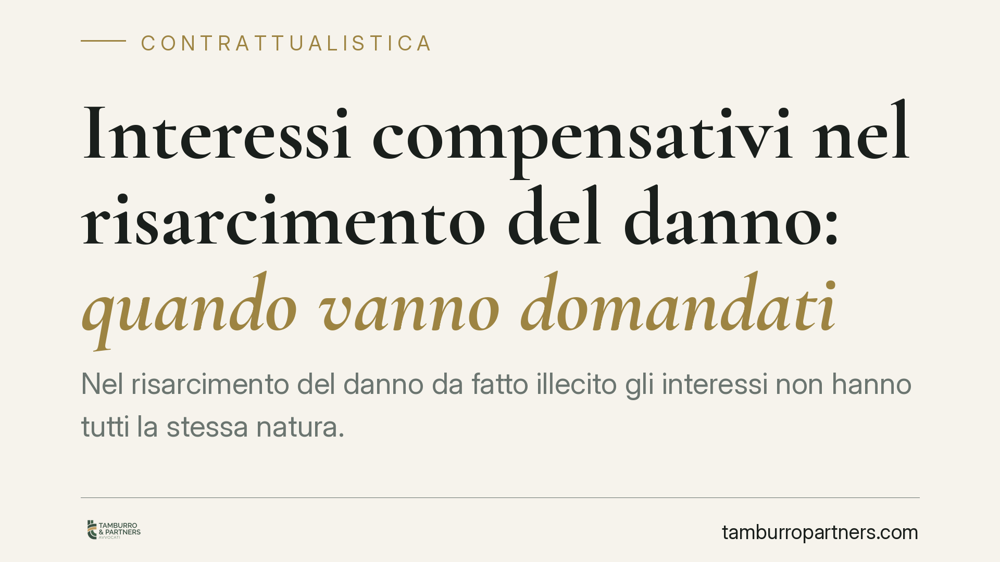

Interessi compensativi nel risarcimento del danno: quando vanno domandati
Nel risarcimento del danno da fatto illecito gli interessi non hanno tutti la stessa natura. Distinguere quelli compensativi da quelli moratori incide sulla necessità o meno di una domanda espressa e sui limiti in appello. Un chiarimento utile a chi agisce in giudizio, in particolare nelle liti con enti assicurati tramite polizze claims made.

Il tema in breve
Quando si chiede il risarcimento di un danno derivante da fatto illecito, alla somma capitale si aggiungono spesso interessi e rivalutazione monetaria. Il punto pratico è capire se queste componenti debbano essere domandate in modo esplicito oppure se il giudice possa riconoscerle anche d'ufficio, cioè senza una richiesta specifica di parte.
La risposta non è unica: dipende dalla natura del credito e dal tipo di interessi. Confondere le categorie può portare a domande formulate male o a contestazioni sulla loro ammissibilità nei gradi successivi del giudizio.
Inquadramento normativo
Occorre distinguere due situazioni.
Interessi moratori su debito di valuta. Quando l'obbligazione ha per oggetto una somma di denaro già determinata (debito di valuta), gli interessi moratori (art. 1224 c.c.) compensano il ritardo nel pagamento. In linea di principio richiedono una domanda di parte, perché costituiscono una posta autonoma rispetto al capitale.
Interessi compensativi e rivalutazione su debito di valore da illecito. Il credito da fatto illecito è un *debito di valore*: mira a reintegrare il patrimonio del danneggiato al valore attuale. Le Sezioni Unite (Cass. S.U. n. 1712/1995) hanno chiarito che rivalutazione e interessi compensativi sono strumenti tecnici di liquidazione del danno, volti a ristorare il pregiudizio da ritardato pagamento sul valore rivalutato. In questa cornice, l'orientamento tradizionale riconosce al giudice la possibilità di liquidarli anche d'ufficio, purché la parte abbia domandato il risarcimento integrale del danno.
Restano fermi i principi cardine del processo: il giudice provvede solo sulla domanda proposta (art. 99 c.p.c.) e non può pronunciare oltre i limiti di essa (art. 112 c.p.c.), a pena di *ultrapetizione*, cioè di decisione su qualcosa che non era stato chiesto. Su questo terreno si innesta anche il divieto di domande nuove in appello (art. 345 c.p.c.).
Una precisazione importante sull'attualità normativa: alcune fonti di stampa specializzata hanno riferito di una recente ordinanza della Cassazione in materia, indicandone gli estremi. Prima di fondare una strategia processuale su una singola pronuncia, è indispensabile verificarne in banca dati numero, anno, Sezione e contenuto effettivo. In questa sede trattiamo il quadro di principio, che resta stabile a prescindere dal singolo arresto.
Implicazioni pratiche
Per chi agisce in giudizio la differenza non è formale.
Se il credito è di valuta, la mancata richiesta espressa di interessi rischia di lasciarli fuori dalla condanna. Se invece si tratta di risarcimento da illecito (debito di valore), la richiesta di ristoro integrale del danno consente in genere al giudice di liquidare rivalutazione e interessi compensativi come componenti del calcolo.
La qualificazione incide anche in appello: se una posta è componente del danno di valore già domandato, la sua richiesta non costituisce necessariamente una domanda nuova inammissibile; se invece è una voce autonoma non introdotta in primo grado, il divieto dell'art. 345 c.p.c. può precluderla.
Il tema è particolarmente sensibile nelle controversie contro enti assicurati (ad esempio aziende sanitarie in cause di responsabilità medica). Qui la copertura opera spesso tramite polizze *claims made*, che coprono le richieste di risarcimento presentate durante la vigenza del contratto: la corretta formulazione e il tempestivo invio della domanda risarcitoria hanno riflessi sia sul contenzioso, sia sull'operatività della garanzia assicurativa.
Cosa fare in concreto
- Qualificate il credito all'inizio della lite: verificate se si tratta di debito di valuta o di valore da fatto illecito.
- Formulate una domanda risarcitoria ampia, chiedendo il ristoro integrale del danno comprensivo di rivalutazione e interessi, senza affidarvi al riconoscimento d'ufficio.
- Verificate ogni pronuncia citata (numero, anno, Sezione) in banca dati ufficiale prima di costruirvi sopra una strategia.
- Nelle liti con enti assicurati, curate tempi e forma della richiesta di risarcimento, considerando le clausole claims made della polizza.
- Documentate la data della domanda e le comunicazioni rilevanti, perché possono incidere sulla decorrenza di interessi e sull'attivazione della copertura.
---
Contributo informativo a cura di Tamburro & Partners – Avv. Giuseppe Tamburro. Non costituisce parere legale.
Ogni contratto ha il suo equilibrio.
Se vuoi una revisione delle clausole o una redazione su misura, scrivi allo studio. Ti rispondiamo entro un giorno lavorativo.